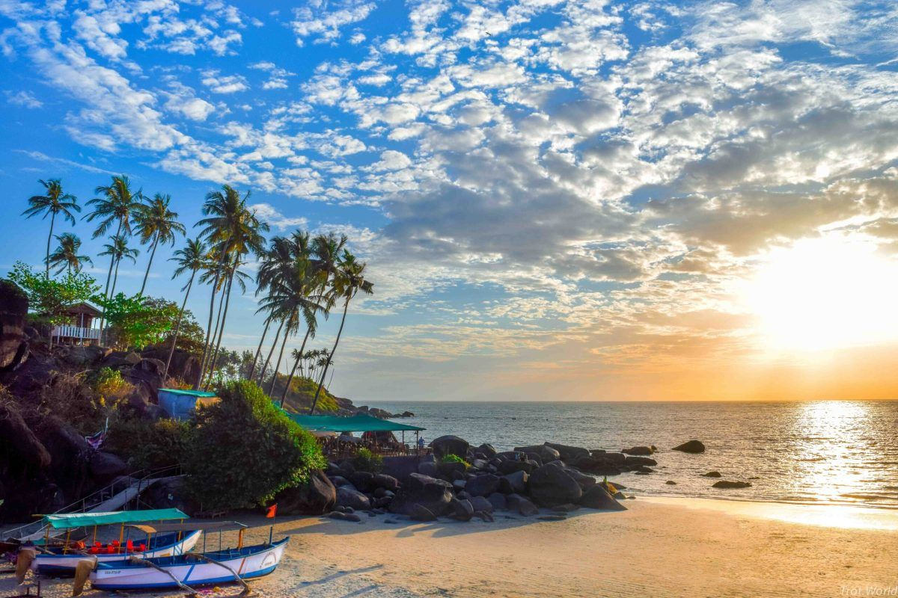

Want to explore heaven on Earth?
Trending Tour Packages

Wavy Goa
Goa is everything leisurely tropical holidays are made of. The smallest state in India is an internationally famous beach holiday destination.Snuggled in between lush Western Ghats and azure waters of the Arabian Sea, Goa is languid. Goa holiday packages offers you a chance to explore and experience the best of this place.
Read more
Hot Rajasthan
The Royal state of Rajputs, erstwhile brave warrior rulers, the place lingers with an indescribable charm. Known for its historical monuments, tourism is benchmarked with majestic forts, places, temples and lakes in the scorching desert.
Read more
Cool Kashmir
Nestled at the foothills of the Pir Panjal mountain ranges, Jammu and Kashmir is one of the most visited places in India. Blessed with snowcapped peaks, lush valleys, picturesque lakes, the stunning landscape was given the sobriquet of 'Heaven on Earth' and rightly deserves so.
Read more